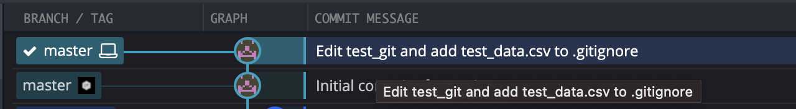

21 Git and GitHub
library(dplyr, warn.conflicts = FALSE)
library(ggdag, warn.conflicts = FALSE)
library(ggplot2)21.1 âï¸Overview
My notes on git and GitHub. There are also chapters in R4Epi on git and GitHub. These notes should not reproduce those chapter. These notes should go beyond those chapters or be used for experimenting.
- Coding best practices. I still need to add material to this section about writing commit messages.
- Introduction to git and GitHub
- Using git and GitHub
This chapter of the notes still needs a ton of cleaning up!
21.3 Documenting practices
With GitHub, there are so many options for where and how we can document things. This is my current set of best practices.
README: Getting started and how to use for users.
Vignettes: More depth than README and possibly talks about the theory behind the package/project. Possibly answers the why questions.
Pgkdown: Not different from README and vignettes. Just makes them easier to find and look a little nicer.
NOTES: My private notes just for me. Not for tasks. Answers why or how, but not what. When possible, use Wiki instead.
GitHub Wiki: Public notes for contributors/developers.
GitHub Discussion: Public questions and answers. I’m trying to decide if I should just use Stack Overflow somehow instead. Maybe use both.
GitHub issues: Tasks that need to be completed.
GitHub projects: Organize issues/tasks.
21.4 Commit message
This section needs a ton of improvement – and probably should be moved over to Coding best practices. However, I want to jot down some quick notes.
From, How to Write a Git Commit Message, I like:
A properly formed Git commit subject line should always be able to complete the following sentence: If applied, this commit will {your subject line here}
21.5 Pushing commits to remote
Don’t push your work until you’re happy with it. One of the cardinal rules of Git is that, since so much work is local within your clone, you have a great deal of freedom to rewrite your history locally. However, once you push your work, it is a different story entirely, and you should consider pushed work as final unless you have good reason to change it. In short, you should avoid pushing your work until you’re happy with it and ready to share it with the rest of the world. https://git-scm.com/book/en/v2/Git-Tools-Rewriting-History
21.6 Get rid of .DS_Store
The .DS_Store file can be an annoyance when working with Git on MacOS. Here is a link to instructions for removing .DS_Store from your repository. Do it early and never worry about it again.
In the terminal, run the following code from the root directory:
# Remove existing files from the repository:
find . -name "*.DS_Store" -type f -exec git-rm {} \;# Add .DS_Store to .gitignore
echo .DS_Store >> .gitignore# Commit the file to the repo
git add .gitignore
git commit -m '.DS_Store banished!'21.7 Amend
Changing the last commit: git commit --amend. This is for adding files to the previous commit, not for removing files from the previous commit.
The
git commit --amendcommand is a convenient way to modify the most recent commit. It lets you combine staged changes with the previous commit instead of creating an entirely new commit. It can also be used to simply edit the previous commit message without changing its snapshot. But, amending does not just alter the most recent commit, it replaces it entirely, meaning the amended commit will be a new entity with its own ref. To Git, it will look like a brand new commit. https://www.atlassian.com/git/tutorials/rewriting-history
- Edit -> commit -> edit -> amend -> commit = no problem!
- Edit -> commit -> push -> edit -> amend -> commit -> push = problem!
- Short answer, don’t do it.
- Adding more chages to your last commit
21.8 Pull Requests
- Instructions for leaving comments
- Very simple merge conflicts can be resolved directly on GitHub.com
- Use command line instructions to try out the code to resolve more complex merge conflicts.
Example command line pull request merge conflict
If there are already changes on the branch (so you can’t pull), you need to either:
- Commit the changes on the branch (if you want to keep them)
- Throw away local changes with git checkout -f, and then remove untracked files with git clean -fd
21.9 Branches
Naming convention: issue-#-short-description
Basic workflow:
- Create new branch - never develop on Master
- Push new branch to remote
- Do some work - commit - amend - push along the way
- When work is done, create a pull request for Master
- Deal with merge conflicts if they exist, and merge into Master
- Delete development branch
Merging specific files from another branch.
Also, if you haven’t committed the files you don’t want to move over yet:
- Commit just the files you DO want to merge into master.
- Push
- Create a request to pull the changes you just committed into the master branch.
- Don’t delete the issue branch. Just continue working on the files you don’t commit and merge with the pull request.
21.10 Squashing commits
I’ve done more of this lately. These notes should be improved too. For now, I just want to jot down that The first commit message will be the commit message for the squashed commits. So, if you know you are doing some WIP commits, you may want to start with the end in mind?
You can also amend your commit message in GitKraken, but this is complicated if you’ve already pushed to a remote repository.
21.12 Cherry pick
What is cherry pick? Pull one commit from branch A to branch B, without having to bring all commits from branch A to branch B.
21.13 Removing a file
Despite our best efforts, there may be times when we commit a file and push it to GitHub by accident. In that case, it isn’t enough to simply gitignore the file. That will prevent future changes to the file from being pushed to GitHub, but it won’t do anything about the file that’s already there. In fact, you can even delete the file (which you may not actually want to do) and push the deletion to GitHub. But, even in that case, the file will still be in your commit history. So how do you totally banish the file from GitHub as though it was never there in the first place?
We have a sandbox repository here: https://github.com/brad-cannell/sandbox. We cloned it to Dropbox/R.
We created a plain text file named
test_gitin the master branch, we added a little bit of text, we committed it to the master branch, and we pushed it to GitHub.
- We created a csv file with some fake “data”. We saved it as
data/test_data.csv. We need the data for our project, but we don’t want the data to be pushed to GitHub where it will be available to the public. What we should do is add this file – or perhaps the entire data folder – to.gitignore. But, we are going to pretend that we forgot to do that. Instead, we committeddata/test_data.csvto our local repo after saving.
In the screenshot above, we can see that we have accidentally committed data/test_data.csv to the master branch of our local repository. However, we have not pushed that commit to our remote repository on GitHub.
21.13.1 Undo commits, no push
Because we haven’t pushed the commit to GitHub, we have lots of options. In fact, we haven’t even technically done anything “wrong†yet. Committing the data to our local repository isn’t a problem in and of itself. It only becomes a problem when we push it to the public remote repository on GitHub. The easiest solution is to simply click the Undo button in GitKraken (https://www.gitkraken.com/learn/git/problems/undo-git-commit).
As we can see in the screenshot above, clicking Undo rolled back the commit, and leaves data/test_data.csv in the staging area. Now, we can easily unstage the file data/test_data.csv, add it to .gitignore, and move on with our project. From this point on, data/test_data.csv will still exist on our computer, but git will be totally oblivious to it, and more importantly, won’t ever upload a copy of it up to our public remote repository on GitHub.
This is sort of the best case scenario. Now, let’s add one level of complication to the scenario.
- Just like 3 above, we committed
data/test_data.csvto our local repo after saving. However, we don’t catch it immediately this time. Instead, we keep working on our project. Specifically, we add a little text totest_git, savetest_git, and commit those changes. Importantly, we still haven’t pushed any commits that includedata/test_data.csvto our public remote repository on GitHub.
It turns out that we can still use the Undo button in this scenario as well.

As we can see in the screenshot above, clicking Undo twice rolled back two commits, and left data/test_data.csv and the edited version of test_git in the staging area. Then, we unstaged data/test_data.csv, added it to .gitignore, staged the modified .gitignore, and committed. From this point on, data/test_data.csv will still exist on our computer, but git will be totally oblivious to it, and more importantly, won’t ever upload a copy of it up to our public remote repository on GitHub.
So, when won’t the Undo button work?
For starters, it won’t work if we’ve pushed our commit to a remote repository.
Additionally, like with undo in Word, once you start clicking undo and then working and then clicking undo again, there is a limit to how far back you can go. I don’t fully understand what that limit is at the moment. I think it has something to do with when commit hashes change, or at least when parent hashes changes. Figure this out later.
I tried all kinds of weird things to make undo not work – including udoing multiple branches – and couldn’t come up with a case. I know cases exist, but the point is that Undo will work a lot of the time as long as you don’t push to a remote repository.
21.13.2 One commit, pushed to Github
This scenario starts like the one above did.
We have a sandbox repository here: https://github.com/brad-cannell/sandbox. We cloned it to Dropbox/R.
We created a plain text file named
test_gitin the master branch, we added a little bit of text, we committed it to the master branch, and we pushed it to GitHub.
- We created a csv file with some fake “data”. We saved it as
data/test_data.csv. We need the data for our project, but we don’t want the data to be pushed to GitHub where it will be available to the public. What we should do is add this file – or perhaps the entire data folder – to.gitignore. But, we are going to pretend that we forgot to do that. Instead, we committeddata/test_data.csvto our local repo after saving.
In the screenshot above, we can see that we have accidentally committed data/test_data.csv to the master branch of our local repository. However, we have not pushed that commit to our remote repository on GitHub.
This time, we do go ahead and push the commit to GitHub.
Next, we will click the Undo button as we did above. Here’s what happens.
GitKraken gives us a message saying that the undo was successful.
The local repository is rolled back to its previous state.
data/test_data.csvis locally once again in the staging area.
However, when we take a look at the repository in GitHub, we can see that the file is still there.
Our first instinct might be to unstage data/test_data.csv locally, add it to .gitignore, and then create a new commit with data/test_data.csv ignored. Let’s do that.
However, this hasn’t changed anything on GitHub. The data is still available there. So, try to push our commit with data/test_data.csv ignored to GitHub.
When we do, GitKraken asks us that refs/heads/master is behind refs/remotes/origin/master. This makes sense, we rolled our local repo back one commit, so it is behind the latest commit on GitHub (i.e., refs/remotes/origin/master). However, we are trying to send up a commit that differs from the commit on GitHub. This could create a conflict. So, GitKraken asks us if we want to try to pull down the commit from GitHub first. In this case, we don’t. That commit is exactly what we are trying to get rid of. Let’s click the Force Push button. GitKraken will warn us that this is destructive and double-check that it is what we want to do. It is.
Now, when we go on GitHub, we can see that data/test_data.csv is not longer showing up in our repository.
When we search for test_data in our repository, the only place it appears is in the .gitignore file. It looks like we successfully removed the data file from our repository!
21.13.3 Multiple commits, pushed to GitHub
Finally, let’s add one more wrinkle to this scenario. Let’s send multiple commits to GitHub and see if we can remove any trace of the test data by simply adding it to .gitignore and pushing it up to GitHub.
We are going to add some text to test_git, commit it to the master branch, and push it to GitHub.
Let’s once again “accidentally†commit and push a data set – data/test_data_2.csv – to GitHub.
When we look at GitHub, we can see that the file is there.
And when we search for test_data_2, it comes up as a commit.
If we click on the commit, we can see the data.
Now, we will make another change to test_git, commit it to the master branch, and push it to GitHub.
We will make a change to data/test_data_2.csv, commit it to the master branch, and push it to GitHub.
And, we will make yet another change to test_git, commit it to the master branch, and push it to GitHub.
This is what our commit history looks like at this point.
Let’s once again try to do what we did before. Click the Undo button all the way back to our first commit of data/test_data_2.csv.
Add data/test_data_2.csv to .gitignore, commit, and force push.
Here’s the situation:
The edited
data/test_data_2.csvfile is still on our local machine.The edited
test_gitfile is still on our local machine, ready to be committed and pushed again.
When we look on GitHub, the data directory is gone.
When we search for test_data in our repository, the only place it appears is in the .gitignore file.
It looks like we successfully removed the data file from our repository!
21.13.4 When these methods won’t work
I don’t know how, but I managed to mess up detect_public so bad that the methods above won’t work. I can’t Undo back to a point before the data file existed.
Here’s the current state of my (fake) repository.
It looks like the best thing to use is https://github.com/newren/git-filter-repo.
Use the installation instructions here: https://github.com/newren/git-filter-repo/blob/main/INSTALL.md
Click on the link to the raw data file, select all the text in the file, copy and paste the text into a blank plain text file, and save the file anywhere as git-filter-repo with no file extension.
Move git-filter-repo to the top-level directory of the local repository you want to edit. In this case, it was Dropbox/R/sandbox.
Then, check the user manual to see what git-filter-repo commands to run. Here is a link to the user manual: https://htmlpreview.github.io/?https://github.com/newren/git-filter-repo/blob/docs/html/git-filter-repo.html
To see if it’s working, type in the GitKraken terminal git_filter_repo_1. This should create a file named .git/filter-repo/analysis. I actually couldn’t find this file.
Using this example, https://improveandrepeat.com/2021/06/how-to-use-git-filter-repo-to-remove-files-from-your-git-repository/, I’m going to try to remove data/test_data_3.csv from the commit history by typing python3 git-filter-repo --path data/test_data_3.csv --invert-path --force into the Terminal in GitKraken.
At this point, we have cleared data/test_data_3.csv from the commit history of the local repository, but the actual file is still on our local machine. Curiously, this procedure also broke the connection to our remote repository on GitHub. However, the GitHub repository, with the test_data_3.csv still remain online.
It looks like we have to delete the orignial repository on GitHub and then push our cleaned local repository to a new GitHub repository. In this case, I deleted brad-cannell/sandbox on GitHub. Then, I created a new brad-cannell/sandbox repository on GitHub. Then, I pushed the cleaned local repository to the new brad-cannell/sandbox on GitHub.
The data was nowhere to be found in the new repository brad-cannell/sandbox on GitHub. Next, I moved my local folder containing the “old†sandbox repository (and the test_data files) to my desktop. Then, I cloned the new brad-cannell/sandbox on GitHub to the location where my old sandbox repository that I just moved to my desktop used to be.
Finally, I moved the data/ folder from the “old†sandbox repository to the new sandbox repository that I just cloned from GitHub. In this case, the data files that I wanted to ignore were already listed in .gitignore file, so I didn’t need to add them.
With detect_public, I created a fresh clone of https://github.com/brad-cannell/detect_public on my desktop.
Then, I typed python3 git-filter-repo --path qaqc/clusca_factor.csv --invert-path and python3 git-filter-repo --path qaqc/clusca_factor.csv --invert-path into the terminal in GitKraken (in the fresh clone). It didn’t work. I got a message that said, [Errno 2] No such file or directory. This was because I had deleted the data files previously to try to get rid of them.
Next, I did a soft reset of the main branch to the commit where the two data files where added. Then, I once again ran, python3 git-filter-repo --path qaqc/clusca_factor.csv --invert-path and python3 git-filter-repo --path qaqc/clusca_factor.csv --invert-path into the terminal in GitKraken. Same problem.
Next, I did a hard reset of the main branch to the commit where the two data files where added. Then, I once again ran, python3 git-filter-repo --path qaqc/clusca_factor.csv --invert-path and python3 git-filter-repo --path qaqc/clusca_factor.csv --invert-path into the terminal in GitKraken. This time, I could see the files in Finder. However, I still got the same error. So, I copied the full file path and ran python3 git-filter-repo --path /Users/bradcannell/Desktop/detect_public/qaqc/clusca_factor.csv --invert-path I still got the same error.
I had to add the git-filter-repo file into the new cloned repo folder on my desktop. Then, I ran python3 git-filter-repo --invert-paths --path qaqc/clusca_factor.csv --force.
Then, I moved the data/ folder out of the old local repository and into the new local repository on my desktop.
I deleted the old local repository.
I re-linked my local repository with the remote repository on GitHub using git remote add origin https://github.com/brad-cannell/detect_public. Unfortunately, that brought the data files back into the history
But, I ran git push origin --force --all anyway.
It fixed the problem. All forked repositories also needed to be deleted.
21.14 Other little quirks and errors
When working on Epi III – and I think this could be an issue with using git on OneDrive more generally – I would have to recommit files when I changed computers. Not because the content of the file had changed, but because something called the file mode had changed. I searched SO and seemed to fix it with this post: https://stackoverflow.com/questions/1580596/how-do-i-make-git-ignore-file-mode-chmod-changes
Open terminal and type:
git config core.fileMode falseAnother issue I encountered when working on Epi III – and I think this could be an issue with using git on OneDrive more generally – was the existence of these “Icon†files every time I switched computers. However, they didn’t seem to actually exist (or at least they weren’t visible), and ignoring them in the usual way did not seem to actually ignore them. I searched SO and seemed to fix it with this post: https://stackoverflow.com/questions/17556250/how-to-ignore-icon-in-git
Open terminal and type:
printf "Icon\r\r" >> .gitignore